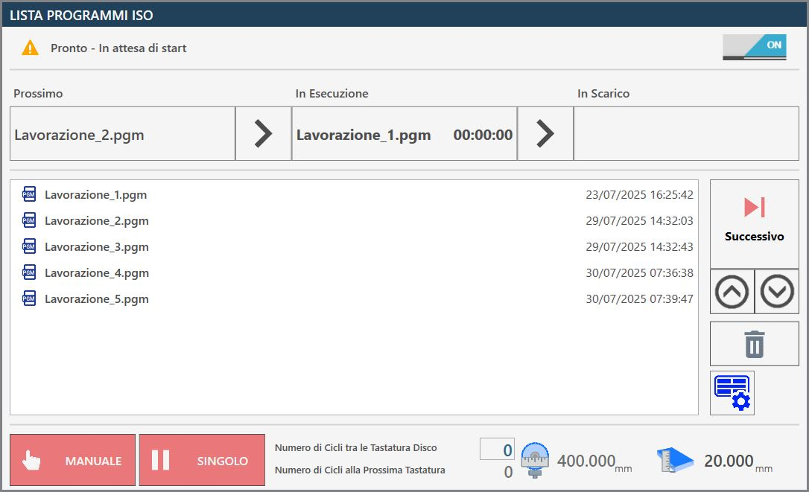
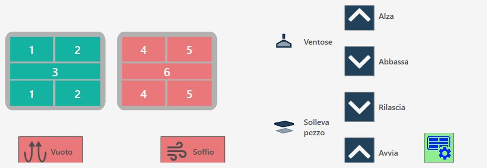
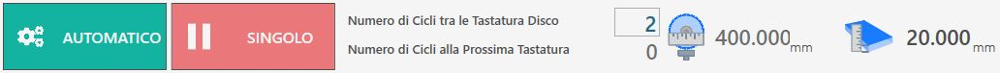

Auf der Seite ISO-Programmliste können mehrere zuvor mit CAD-CAM-Programmen erstellte Programme nacheinander ausgeführt werden, für Maschinen mit zwei Arbeitsbereichen, Twin-Maschinen oder Programme mit mehreren Bearbeitungen, die erstellt wurden, während die Maschine bereits in Betrieb ist.

Obere Leiste
In der oberen Leiste werden Informationen zur Überwachung des Fortschritts der Liste angezeigt.

  | ISO-Programmliste aktivieren/deaktivieren |
  | Ausführungsstatus der Liste |
   | Fortschrittsleiste der Liste |
Fortschrittsleiste der Liste
Diese Fortschrittsleiste liefert Informationen zum Ausführungsstatus des laufenden ISO-Programms und gibt zugleich einen Überblick über das nächste Programm in der Liste sowie über das bereits abgeschlossene Programm, das in den Entladevorgang übergegangen ist.

Im vorherigen Bild ist noch kein Programm in der Entladephase sichtbar, da die Ausführung der Liste noch nicht gestartet wurde und noch kein Werkstück bearbeitet wurde. Wenn dagegen nur eine ISO-Datei in der Liste vorhanden ist oder die Bearbeitung gestartet wurde und alle anderen Dateien bereits ausgeführt wurden, bleibt der Bereich Nächstes leer.
Während der Ausführung wird der Programmfortschritt in Echtzeit angezeigt, wie nachfolgend dargestellt.

Seitenmenü
Auf der rechten Seite des Saugnapfbedienfelds befinden sich einige Schaltflächen zur Verwaltung der einzelnen Dateien in der Programmliste.
 | Nächstes Programm ausführen |
 | Ausgewähltes Element nach oben verschieben |
 | Ausgewähltes Element nach unten verschieben |
 | Ausgewähltes Element löschen |
 | Saugnapfbedienfeld |
Saugnapfbedienfeld
Die Saugnäpfe können manuell verwendet werden, um Werkstücke von einem Arbeitsbereich in einen anderen zu bewegen.

Saugnapfschaltflächen
 | Saugnäpfe aktivieren/deaktivieren |
 | SAUGNÄPFE: ANHEBEN - Saugnäpfe parken |
 | SAUGNÄPFE: ABSENKEN - Saugnäpfe bereitstellen |
 | WERKSTÜCK ANHEBEN: FREIGEBEN - Werkstück ablegen |
 | WERKSTÜCK ANHEBEN: STARTEN - Werkstück anheben |
  | BLASLUFT - Blasluftsteuerung |
 | VAKUUM - Vakuumpumpensteuerung |
Sicherheitsbedingungen
Beim Anheben besonders auf die aktiven Saugnäpfe achten und sicherstellen, dass die verwendeten Bereiche zum Anheben des zu bewegenden Werkstücks ausreichend sind. Zum Greifen des Werkstücks stets die größtmögliche verfügbare Vakuumfläche verwenden und prüfen, dass das Material keine Defekte oder Brüche aufweist, die Gefahren oder Störungen des Maschinenbetriebs verursachen könnten.
Nach dem Einschalten der Vakuumpumpe darf sie nur über die hierfür vorgesehenen automatischen Funktionen ausgeschaltet werden. Das Drücken der Reset-Taste oder des Not-Aus-Pilztasters hat keine Auswirkung auf die Vakuumpumpe; sie läuft weiter. Das Ausschalten der Pumpe kann über die entsprechende Schaltfläche auf der Seite „Zusätzliche Befehle“ erzwungen werden.
Bei automatischen Abläufen wird vor dem Anheben des Werkstücks der Vakuumzustand über einen entsprechenden Sensor geprüft: Wird kein ausreichender Vakuumwert erkannt, erscheint der Alarm „Vakuum fehlt“. Die Pumpe bleibt aktiv, bis der Vakuumschalter einen korrekten Wert erkennt oder bis sie auf der Seite „Zusätzliche Befehle“ deaktiviert wird.
Ein Ausfall der Stromversorgung der Vakuumpumpe führt zu einem schnellen Verlust des Vakuums und damit zum Herabfallen des mit den Saugnäpfen angehobenen Materials.
Untere Leiste
Im unteren Bereich der Leiste werden einige Funktionen zur Ausführung der ISO-Programmliste sowie zur Überwachung von Werkzeug und Platte angezeigt.

Ausführung der Liste verwalten
Im unteren Bereich befinden sich außerdem die beiden Schaltflächen für die Programmausführungsmodi:
  | Manuell / automatisch |
  | Einzeln / nächstes automatisch |
Platte und Werkzeug überwachen
In der Mitte und rechts in der unteren Leiste kann der Bediener regelmäßige Kontrollen des Werkzeugdurchmessers konfigurieren, indem Prüfungen in festgelegten Intervallen auf Grundlage der Anzahl ausgeführter Zyklen eingestellt werden.

 | Anzahl der Zyklen zwischen den Scheibenantastungen |
|---|---|
 | Anzahl der Zyklen bis zur nächsten Antastung |
 | Werkzeugdurchmesser |
 | Plattenstärke |
Ausführung der ISO-Programmliste
Wenn die ISO-Programmliste deaktiviert ist, erscheint der Schalter oben rechts im Bedienfeld ausgeschaltet; die Funktion kann durch einfaches Anklicken dieser Schaltfläche aktiviert werden.
Die ISO-Programmliste wird automatisch erweitert, wenn in Parametrix ISO-Dateien erzeugt werden. Der Bediener kann Elemente in der Liste dennoch nach Bedarf neu anordnen oder entfernen.
Vor der Ausführung der Liste kann der Bediener die Anzahl der Zyklen festlegen, die zwischen den Werkzeugantastvorgängen ausgeführt werden.
Daraufhin wird die Anzahl der bis zur nächsten Antastung verbleibenden Zyklen aktualisiert und angezeigt.
Der Bediener startet die Ausführung der Programmliste durch Drücken der Schaltfläche „Zyklus starten“. Dadurch werden die Programme nacheinander ausgeführt; gleichzeitig werden das laufende, das als Nächstes auszuführende und das bereits abgeschlossene Programm angezeigt.
Wenn der Programmausführungsmodus auf Manuell und Einzeln eingestellt ist, wird die Ausführung der Liste am Ende des laufenden Programms unterbrochen, unmittelbar nachdem das nächste auszuführende Programm vorbereitet wurde.
In diesem Fall kann der Bediener die Schaltfläche Nächstes drücken, sobald er dies für zweckmäßig hält, und anschließend die Ausführung durch erneutes Drücken der Schaltfläche „Zyklus starten“ fortsetzen.